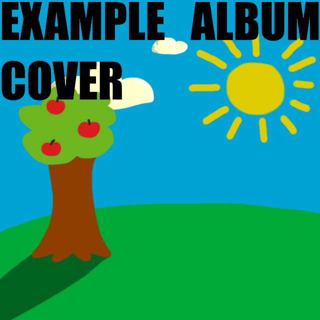

2026 - day #
home
31DoM 2026

This is the space where i'll talk about the album at length. I'll discuss what I do and don't like about it, what my expectations were, maybe a favorite (or least favorite) track or two, and if there's a reason I chose to rate this album on this day, I'll also put that here too. I might compare the album to previous works of the artist, or maybe express how I like how much it differs from previous works. It won't be too long of a read, but it'll definitely be enough to get you to actually read it.
| Songwriting | Production | Vibes | Orignality | Replayability |
|---|---|---|---|---|
| ##/20 | ##/20 | ##/20 | ##/20 | ##/20 |